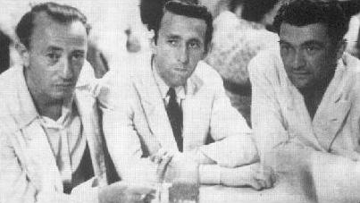

Zaten herkes işini ne kadar iyi yaptığını görür.
Kuşlar, kapılar, çocuklar, herkes işini ne denli iyi yaptığını fark eder.
Yüzlerce yıl sonra bile eserlerin yaşar.
Senin anlatmana gerek kalmaz zaten.
Çıplaklar kampında oğlan kıza:
"Seviyorum"
Kız da:
"Görüyorum" demiş.
İnsanlara hiç işinizi ne kadar iyi yaptığınızı anlatmayın, sadece yapın.
Bitiş biraz "Just do it" oldu ama idare edin artık.
Yalnız şu noktaya getirmeyin:
Gördüğüm en baba iş kalitesi vakasını anlatıyorum.
Kızılay'dan dolmuşa bindim (eveeet, sürünüyorum dolmuşta, otobüste, eveeeet).
En arkadayım, bozuk yok, elli lira uzattım öndekine (eveeet para gani, eveeet).
Ne yaparsın? Parayı alıp, duygusuzca bir öndekine verirsin ya; bu aldı, güneşe tuttu parayı, baktı biraz, döndü bana:
"Gerçek" dedi.
Bak iş ciddiyetine. Para uzatıcılık nasıl olur? Önce sen değil yanındaki uzatsın diye duymazlığa gelirsin, sonra omzuna şaplağı yiyince bir şey söylemeden bir öndekine verirsin. Bu, kalite kontrol yapıp dolmuşçunun hakkını, hukukunu koruyor. Bununla da bitmedi, iki dakika sonra üstü gelmeyince, ben eziğinin sesi çıkmadığından bu gürledi:
– Patron, 50'den bir kişi gelmedi hâlâ!
Para buna geldi. Aldı parayı şak şak şak saydı, döndü bana:
"Üstü tamam" dedi.
Bak yemin ediyorum fabrikam, üretim tesisim olsa isterse okuma yazma bilmesin, alırım işe, kalite kontrol müdürü yaparım. Tek yanlış ürün olmaz.
Bana eğitimi yok, kalite eğitimi almalı falan demeyin. O almış eğitimini, amirlerinden görmüş sıkı kurs, Kal-Der Başkanı o gönlümde benim. Ben hayatımda saymadım para üstünü, o benim paramı sayıyor.
Ali Mahmut sormuş:
– Seyfi nereye gidiyorsun?
– Ke.... ke... kekemeee o...... okuluna giiiiidi..... yoooorum.
– Yav hiç gitmene gerek yok, şahane kekeliyorsun.
İzmir'de bir öğrencim, Kenan, Pixel Reklam Ajansı'nın sahibi. Ajansın tüm işleri gerçekten süper. "Bu işlerin kalitesi nasıl böyle iyi Kenan?" diye sorduğumda zannettim ki bana bilgisayarcısından, çizimcisinden falan bahsedecek.
– Bizim temizliğimize, ofisimize bakan Nefise Hanım sayesinde.
– ?
– Öyle iyi iş yapar, öyle çalışır ki hepimize örnek olur. Geçenlerde elektrik kesilince eşini iş yerine çağırmış. Buzdolabındaki tüm yiyecekleri toplayıp kendi evlerindeki buzdolabına götürüp koymuşlar. Hafta sonu geçince, pazartesi yüklendiler gıdaları, geri getirdiler. Her işini böyle yapar. Batıp gidecek olsak, önce kendimi, en son Nefise Hanım'ı işten çıkarırım.
Ben size bir şey söyleyeyim mi, Nefise'yi hayatta kriz mriz etkilemez, evine ekmeğini götürür.
Mimar Sinan, o büroda ofis işlerine bakıyor olsa, o da aynen Nefise gibi çalışırdı. Piri Reis'in, Atatürk'ün, Nefise Hanım'ın ortak özellikleri ne biliyor musunuz? Ne iş yaptılarsa şahane yapmışlar. Benim bir Naile Kemal'im vardı TÖMER'de, o da Nefise Hanım gibiydi. İkisi de Türk, ikisi de göçmen. Bazı kitaplarımda yazdım, göçmen vatandaşlarımızın iş yapma kaliteleri açısından bende ayrı bir yerleri vardır. Çok çalışkandırlar ve işlerini mükemmel yaparlar.
Bulgaristan'da, Yunanistan'da, Yugoslavya'da iyi eğitim aldıkları için değil.
Bizde eğitim almadıkları için kurtarmışlar.
İnşallah üçüncü, dördüncü kuşakları da böyle olur.
Erhanımla İzmir'de bir eğitimden çıktık (Erhan Özallı, Türkiye'nin en iyi takım çalışması eğitmeni, hiç reklamı yok, ortalıkta dolaşıp kendini anlatmaz ama müthiştir eğitimleri).
"Ağabey bir turşu suyu olsa da içsek" falan deyip Şinasi Havuz'u anıyoruz.
İzmirli romantikler bilir, sahafların olduğu bir sokak var, Sevgi Yolu, Fuar'la, Alsancak arası bir yerlerde. Baktık yolun sonunda bir turşucu.
"Ver abi bize iki turşu" dedik.
"Hıııh" dedi (Merhaba anlamında).
Hazırladı bir bardak, ben tam uzanırken "Dur" anlamında tekrar "Hıııh" dedi. Anladık ki dilsiz. Çatal koydu salatalıkların üzerine, aynen şu anki gibi yutkunuyorum, siz de yutkunuyorsunuz değil mi? Bırakın şimdi, canınız çekmiştir. Aranızda Fransız mürebbiyelerinin büyüttüğü arkadaşları ayrı tutuyorum. (Konuyu iyice dağıtıyorum, ama ben bir şarap, gurme, gusto muhabbeti yapıp, size hava atamayacak mıyım arkadaş? Varsa yoksa turşu, kokoreç, dolmuş. Vardır öyle nezih yazarlar, bulursunuz siz.)
Ben tam çatala uzanacağım, "Hııh" dedi (Bekle anlamında).
Bardağı bembeyaz bir peçeteyle sardı, janjan yaptı. Bir dilim de limon taktı kenarına, oldu garden parti. Ben Erhan'ı bekledim, bir bardak da ona verdi, tam içeceğiz, "Hıııh" dedi arkayı gösterdi.
Bir iş yerinden çıkma, yırtık pırtık, ama çok havalı iki siyah deri koltuk bulmuş, "Oturun buraya" diyor. Biz Erhan'la yaslandık makam koltuklarına, bacak bacak üstüne atıp gömüldük.
Geldi yanımıza. Üstünde tertemiz önlük, yakasında ismi, yüzünde gülümseme.
"Hııh" deyip ileriyi gösterdi: Gevrekçi (siz gevreğe simit dersiniz). Diyor ki "İsterseniz iki gevrek getireyim, yanında şahane gider. Benim o kanka da nasiplensin, o da bana arada müşteri yolluyor, sırtımız yere gelmiyor."
"Hıııh" dedik Erhan'la, güldü.
İki de gevrek geldi. Şahane çöplendik.
O turşucu var ya, krizin kralı onu batıramaz.
Kocaman firmalar var, o turşucunun iş kalitesinin yanına yaklaşamazlar. Krizin adı bile batırır onları.
Unutmayın, iş hayatınızda nereye varacağınızı sizin iş kaliteniz belirler.
"Ameliyat çok iyi geçti, hasta öldü!" durumları çok bu ülkede. Ya da aynı futbolcu, iki gol, maç 1-1.
Bu ülkeye, işini iyi yapmayan insanlardan büyük zarar geldi. En büyük zararı onlar verdiler.
Orhan Veli müthiş mi müthiş bir şairdir.
Nasıl öldü bilir misiniz?

Ankara Belediyesi'nin açıp, üzerine bir kapak koymadığı çukurlardan birine düştü geceleyin.
35 yaşında!
70'ine gelebilseydi peçetelerin üstü, âşıkların kalpleri hatta tuvalet kapıları bile onun şahane şiirleriyle dolardı. Orhan Veli öldü. Hayal gücümüz öldü.
Gidin belediyelere aynı adamlar oralarda. Maşallah, sağ salim sırıtıyor, rüşvet bekliyorlar. Kara paraları futbolda aklıyorlar. Orhan Veli'yse öldü. O yedikleri trilyonlarca rüşvetin hiçbiri bir Orhan Veli şiiri etmez.
Yanlış mıyım?
Belediye yine çukurları kapatmıyor, küçük çocuklar düşüp ölmüyor mu?[7]
Belki el kadar çocuklar da büyük şair, edebiyatçı, doktor olacaklar. Ama hâlâ 21. yüzyılda çukurlara düşüp ölüyorlar. Belediyelerin içi dışı bıyıklı, rüşvetçi, eğitimsiz adamlarla dolu. Bana "Biz öyle değiliz" diye elektronik posta atmayın. Öyle değilseniz de, sayınız öyle az ki ülke biliyor sizi ve parmakla gösteriyorlar, "Bu adam rüşvet yemiyor", "Bu belediye şahane çalışıyor" diye.
Kimi müstahdem kimi öğretmenden daha iyi öğretmendir.
Marmara Bölge Müdürümüz Zafer, Bozcaada'da ilkokula başlıyor. Çok ters bir öğretmeni var ve okuldan çok soğuyor. Teneffüslerde tek başına bahçede oturuyor. Babası polis memuru, tayinle gelmiş, diğer çocuklarsa küçüklükten arkadaşlar. Zafercik çok mutsuz.
Bir gün okulun müstahdemi Recep Amca yaklaşıyor yanına, tahtadan bir oyuncak uzatıyor.
– Nasıl?
– Çok güzel.
– Ben yaptım.
–?
– Nasıl yapıldığını öğrenmek ister misin?
– Evet.
– Okuldan sonra ödevlerini bitirince gel, ben seni burada bekleyeceğim.
Zafer, ödevlerini bitirip okula gidiyor. Müstahdem amcayla tahtadan kılıç yapıyorlar. Zafer bütün akşam kılıçla oynuyor.
Ertesi gün teneffüste yanına geliyor:
– Ne haber Zafer?
– Sağ ol Recep Amca.
– Ödevini iyi yap gel, tahtadan at yapalım.
Zafer dersleri bitirip, ödevini tamamlayıp, annesinin sürdüğü salçalı ekmeği de yiyince uçar gibi gidiyor okula.
Sonra öğreniyorlar ki Recep Amca'nın askeri okulda oğlu var. O da evlat özlemini Zafer'e bir şeyler öğreterek gideriyor. Bir süre sonra tahta oyuncaklar dışında ödevleri de birlikte yapmaya başlıyorlar, hayattan, okuldan konuşuyorlar. Zafer bu arada arkadaşlar edinip okulunu sevmeye başlıyor.
Hâlâ söyler Zafer, okulu bana öğretmenim değil, müstahdem Recep Amcam sevdirdi diye.
Kimi müstahdem kimi öğretmenden daha iyi öğretmendir.
Zafer'in okulu Bozcaada İskelesi girişinde, İstiklal İlköğretim Okulu. 2009 Eylül'ü, Orhan, Zafer, ben dalışa gittik. Orhan da Zafer de Uğur Böceği. Orhan "Buraya kadar gelmişken çocuklara bir konferans versek ya" deyince ben de coştum. Girdik okula. Müdür, odasında, uhuyla bir şeyler yapıştırıyor.
"Merhaba" dedik.
"Evet" dedi. Merhabanın cevabı evettir, "Ne var, ne rahatsız ediyorsunuz?" anlamında kullanılır. Zafer garibim anlattı, "Ben bu okulun mezunuyum, biz okullarda ücretsiz ‘yurt sevgisi' eğitimleri veriyoruz. Bu arkadaşım da yazar, çok şahane konuşur vallaha..." diye dikkat çekmeye çalışıyor ama adam uhuya öyle odaklanmış ki kafasını kaldırıp bize bakmıyor bile. Ben "Kalk Zafer, biz arkadaşın meşgul bir zamanına denk geldik. Gidelim ağabey" dedim. Bu kafayı kaldırdı: "Seminer vermek istiyorsanız, Çanakkale Milli Eğitim Müdürlüğü'ne yazılı dilekçe vereceksiniz. Valilik onaylarsa, biz de uygun bir zaman ayarlayabilirsek, bakarız" dedi.
Biz birbirimize baktık.
Ben ondan şaşırıyorum memur arkadaşlar, bu iş yavaşlatma eyleminize. Ben zaten 1938'den beri iş yavaşlatma eylemindesiniz de ondan çalışmıyorsunuz sanıyordum. Eylemi duyunca öğrendik iş yaptığınızı. Bu arada devlet battı o ayrı. Okul müdürü müstahdem Recep Amca olsaydı, biz o gün konferansı vermiştik.
Bu arada bizim Bursa'daki Uğur Böceklerimiz Zafer Erbaşlar, Serkan Duru, Orman Müdürlüğü'nden Şaban Efe ile işbirliği yapıp Bursa'nın köylerine on bin meyve ağacı diktiler. Şaban Efe gibi devlet memurları da var. Zafer, Serkan gibi insanlar da var bu ülkede.
Aslan Uğur Böcekleri.
İyi ki varsınız.
Not: Benim dürüst, çalışkan dostum Hilmi Bey aradı: "Hocam kitabınızı bir devlet yöneticisine hediye ettim. Yarısını okuyup ‘Yazar devlet memurlarını sevmiyor, memurlara karşı önyargılı. Ben bunu okumam' dedi ve geri verdi kitabı."
Kitapta övdüğüm insanlara bakın. Çoğu devlet memuru. Polis Akif devlet memuru, çilekçi öğretmen, Mustafa Güzelgöz, Şaban Efe, imam Kazım Ozan, müstahdem Recep Amca, Hüseyin Haki Efendi, vali Hurşit Bey, Telekomdaki görevli, doktor Fahrettin Er, Üstün Ezer, Nuri Okutan, Recep Yazıcıoğlu, Of kaymakamı... Bunlar sadece ilk 70 sayfada adını andıklarım. Yazar, memurları canı gibi seviyor. İşinin hakkını veren, bu ülkenin fakir halkının vergisinden aldığı maaşının karşılığını vermek için çaba gösteren memurları canı gibi seviyor.
Güneydoğudan Ali öğretmen yazmış bana: "Hocam onca kar kış. Okullarımız sadece bir gün, minibüsler hareket etmediği için kapandı. 20 öğretmen köy okullarımızı her gün açık tuttuk, eğitim verdik. Odun yoktu. Mecburen sabah erkenden caminin odunlarını yürütüp yaktık, ama çocuklarımızı okuttuk". Böyle memur lazım bu ülkeye. Benim babam da memurdu. 1000 defa daha sorsalar gene yukarıdaki örneklerdeki gibi çalışan bir memur olsun isterim. İnsan babasıyla ancak o zaman gurur duyar.
İki tür memur, iki tür insan olursunuz. İlk grup, işinin hakkını veren, çalışkan, dürüst ve ülkesini seven insanlardan oluşur. İkinci grubu ise hepiniz biliyorsunuz zaten.
Benim canım Hilmi Hocam, burası tam kitabın yarısı. Yani senin memurun kitabı iade ettiği yer. Bence haklı. Ben olsam ben de tahammül edemezdim bunca örneğe, bırakırdım yarıda, "Sevmiyor adam memurları" derdim. Oysa bak, örnek verdikle-rimin hepsi devlet erkânıydı.
Kitaptaki memurlarla ilgili kısımları gözden geçirdim. Acaba değişebilecek bir yer, dürüst, ahlaklı insanları, rüşvet yemeyenleri alındıracak bir bölüm var mı diye baktım, bulamadım. Kitabı değiştirmek çok zor. Bence adamın değişmesi lazım. O da imkânsız. Olur, da değişmeye karar verirse seni örnek alsın. Bütün Karaman senden hürmetle bahsediyor. Türkiye'nin adını andığında senin gözlerin doluyor. Anladın değil mi benim aslan dostum? Bunların değişmesi lazım. Kitap değişirse hepimiz kaybederiz: Necati Bey, Abbas, Uğur, Selcen, Nisan, çukura düşen çocuklar, Ali Akasya, Umut... Hepimiz kaybederiz... Bence kitap değişmesin. O adamı değiştirelim biz.